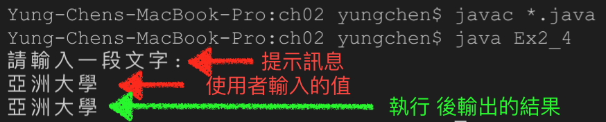
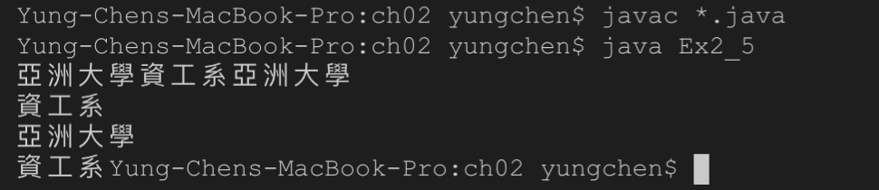

Java程式的基本輸入與輸出
很多時候一個程式的執行需要從使用者那裡取得輸入資料，經過執行後將結果顯示在螢幕上。要接收使用輸入的資料要使用 Scanner 類別所建立出來的物件，假設 Scanner 類別所建立出來的物件叫做 scn ，接著就可以用它來進行接收使用者資料。在建立 Scanner 物件時會使用到 System.in 這個參數，它的意思是指接收電腦的基本輸入設備，也就是從「鍵盤」接收資料。
Scanner scn = new Scanner(System.in);
範例:2-4
程式檔名: Ex2_4.java
// Program file name: Ex2_4.java
// subject: demo basic Input
// 引用 java.util.Scanner 函式庫
import java.util.Scanner;
public class Ex2_4 {
public static void main(String[] args) {
// 宣告一個名字叫做 scn 的掃描器 (Scanner)物件從系統的基本輸入設備(System.in)
// 接收資料，這裡提到的基本輸入設備可以把它想成是 "鍵盤"
Scanner scn = new Scanner(System.in);
// 顯示提示訊息，讓使用者知道是要輸入什麼
System.out.println("請輸入一段文字: ");
// 透過 scn 物件去接收使用者輸入的整行資料 (該行資料中有空白一樣照抓不誤)，放到
// str 的字串變數之中
String str = scn.nextLine();
// 將字串變數 str 中的資料列印出來
System.out.println(str);
}
}
執行結果

各種輸出格式
列印結果不換行
下方的列印指令會印出結果但是不換行，也就是說印出結果後游標會停在印完訊息的後方不會跑到下一行的開頭。
System.out.print("Hello");
// Program file name: Ex2_5.java
// Subject:
public class Ex2_5 {
public static void main(String[] args) {
// 字串資料 str1 的內容是 "亞洲大學"
String str1 = "亞洲大學";
// 字串資料 str2 的內容是 "資工系"
String str2 = "資工系";
// 列印 str1 中的資料 不換行
System.out.print(str1);
// 列印 str2 中的資料 不換行
System.out.print(str2);
// 列印 str1 中的資料後會換行
System.out.println(str1);
// 列印 str2 中的資料後會換行
System.out.println(str2);
// 列印 str1 中的資料後因為加了 "換行符號" \n 所以會換行
System.out.print(str1 + "\n");
// 列印 str2 的資料後不換行
System.out.print(str2);
}
}
說明
- 因為 11 與 13 行都是不換行所以第 15 行執行時會接著印出後再換行
- 第19行 加了 \n 的換行符號所以有換行
執行結果
